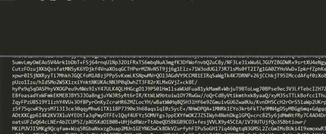
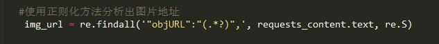
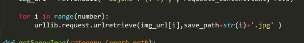
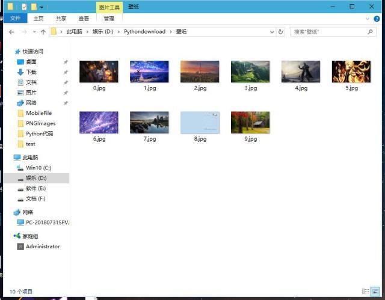
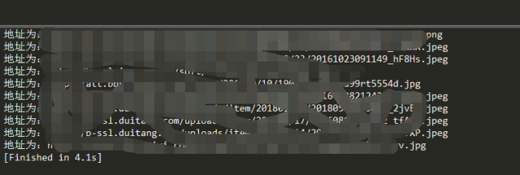

python编程语言，可以说是新型语言，也是这两年来发展比较快的一种语言，而且不管是少儿还是成年人都可以学习这个新型编程语言，今天南京小码王python培训机构变为大家分享了一个python爬虫教程。
网络爬虫，又被称为网页蜘蛛、网络机器人，爬虫分为通用网络爬虫、聚焦网络爬虫、增量式网络爬虫、Deep Web爬虫这四种。“虫如其名”，爬虫并不是一种我们熟知的无脊椎动物中的节肢动物，而是一类计算器程序或脚本，该程序能够自动爬取万维网中的信息，并能够按照一定的要求加工这些信息。
c/c++、java、python、php等语言都可以用来写爬虫程序，但总的来讲，目前大多数开发人员都会选择python、php等语言进行开发爬虫程序，所以今天将使用python教大家制作一个非常简单实用的爬虫程序。
爬虫原理
当我们在网络中寻找我们需要的信息时，一般都会通过浏览器进行操作，浏览器会将我们的请求发送给存放信息的服务器，服务器收到发过来的请求之后会把请求的数据返回给浏览器。
形象一点讲，浏览器就相当于我们人类的翻译官，将我们的人类语言翻译给服务器听，服务器听懂之后就开始执行我们的命令，然后将结果说给浏览器听，浏览器再将结果翻译给我们人类。所以我们的爬虫就是通过不断地模仿浏览器发出的指令，让服务器不断地执行相应的命令，此时服务器并不知道发送命令的是人类还是爬虫，因为服务器只能听得懂浏览器“语言”。
为什么要这样呢？我们人类自己发出命令不好吗？为什么要让机器代劳呢？举个例子：例如你正在做人工智能中的图片识别，这将需要到很多训练数据——图片，你总不能手动地一个个地将图片下载下来吧？这时候爬虫的作用就来了！
python爬虫原理
举个例子，我们现在想要批量抓取猫的图片用于猫狗分类模型训练，聪明伶俐的选择用python去代替手动下载猫、狗图片这个枯燥乏味的过程。
在python中，我们可以使用requests.get(https://www.jkys120.com/)向目标地址发起请求，在这之后服务器会返回一些数据，在这些数据里面就有猫、狗图片的存放地址，我们需要将图片地址和HTML标签以及其他无用信息区分开来，所以将使用到正则化的方法，在这里可以使用re库，这个库自带一些正则化方法。
最后我们需要将指定url中的文件下载到电脑中，这将用到urllib库中的request.urlretrieve()方法。
代码教程
首先按照惯例我们先把将要使用到的库导入到py文件中。
import requestsimport jsonimport urllibimport re
然后开始编写我们的爬取程序，这里以百度图片为例（请求地址在地址栏上，区别只是在word关键字上），程序详解在下面的注释当中。
requests_content的text属性就是服务器返回的文本数据，里面包含了一些HTML标签和JavaScript脚本代码。

这是我们将使用正则化方法来把图片地址提取出来。

最后将url中的图片文件下载到电脑上。

运行结果
在这里批量下载了一些电脑壁纸，情况如何一起来看看吧！

